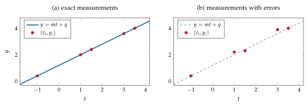
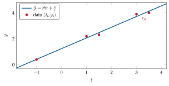
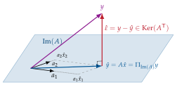
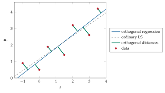

Chapter 4Least squares
This section will introduce one of the pinnacles of model estimation: the least squares method. We will introduce it in the framework of finding approximate solutions to overdetermined linear systems of equations, but we will also discuss other applications. As discussed in Section 1.2, the methodology was introduced by Gauss and Legendre to solve problems related to orbit determination. It is still used today for many different applications in estimation and data analysis. In this sense, it will be largely used in the following chapters for its impact on linear system identification.
4.1 Linear systems of equations
Consider the linear system of \(m\) equations in the \(n\) unknowns \(x_1, \dots, x_n\):
with \(y \in \mathbb{R}^m\), \(A \in \mathbb{R}^{m \times n}, x \in \mathbb{R}^n\). By interpreting the product \(Ax\) as in (2.1), solving \(y=Ax\) means finding coefficients \(x_1,\dots,x_n\) that combine the columns of \(A=[a_1\cdots a_n]\) to obtain \(y=a_1x_1+\cdots+a_nx_n\). Hence:
a solution exists if and only if \(y\in\Im(A)\);
if \(x_p\) is a solution, the set of all solutions is \(\mathcal S=\{x_p+x_0:\ x_0\in\Ker(A)\}\); the solution is unique iff \(\Ker(A)=\{0\}\), i.e. \(\rank(A)=n\); otherwise there are \(\infty^{\,n-\rank(A)}\) solutions.
We now discuss the three possible shapes of \(A\).
Square systems, \(m=n\). A solution exists iff \(y\in\Im(A)\). If \(\rank(A)=n\) then \(\Im(A)=\R^n\) and \(\Ker(A)=\{0\}\), so there is exactly one solution \(x=A^{-1}y\) for every \(y\). If \(\rank(A)<n\), there are either no solutions or infinitely many.
Underdetermined systems, \(n>m\) (more unknowns than equations, \(A\) fat). Solutions exist provided that \(y\in\Im(A)\), and they are never unique since \(\dim\Ker(A)=n-\rank(A)\ge n-m>0\). See Example 4.1.
Consider \(y=Ax\) with
so that \(\Im(A)=\spn\{e_1,e_2\}\subset\R^3\) and \(\Ker(A)=\spn\{e_3,e_4\}\), with \(\dim\Ker(A)=n-\rank(A)=2\).
If \(y=(1,1,0)\T\), then \(y\in\Im(A)\). A particular solution is \(x_p=(1,1,0,0)\T\), and
\[ \mathcal S=\{x_p+x_0:\ x_0\in\Ker(A)\}=\bigl\{(1,1,\alpha,\beta)\T:\ \alpha,\beta\in\R\bigr\}: \]there are \(\infty^{n-\rank(A)}=\infty^2\) solutions.
If \(y=(1,1,1)\T\), then \(y\notin\Im(A)\) (the third equation reads \(0=1\)) and there is no solution.
Whether solutions exist depends on \(y\) because \(A\) is not full row rank; with independent rows this cannot happen (Example 4.3).
Overdetermined systems, \(m>n\) (more equations than unknowns, \(A\) tall). Now \(\Im(A)\) is a proper subspace of \(\R^m\) (of dimension at most \(n<m\)): there is no solution at all whenever \(y\notin\Im(A)\), and an exact solution only if \(y\in\Im(A)\). This is the case we are facing in data fitting.
4.2 A motivating example: fitting a straight line
Assume that an exact linear model \(y=mt+q\) underlies some physical experiment, and that \(m\) measurements \((t_i,y_i)\) are collected. If the points lie on the same line, \(y_i=mt_i+q\) for all \(i\), i.e.
and, if the measurements are exact and the underlying model is linear, \(y\in\Im(A)\) exactly (Figure 4.1(a)). As soon as we account for errors in the measurements \(y_i\), it is clear that \(y\notin\Im(A)\) anymore (Figure 4.1(b)): no straight line passes through all the points. Still, what is the best approximation \(\hat x=(\hat m,\hat q)\T\) we can compute? Defining the residual
it makes sense to look for the \(x\) that makes the residual as small as possible.


From now on, keeping in mind that the straight-line fitting is only a motivating example, we solve the general problem of finding an approximate solution (“the best” in some sense) to \(y=Ax\) whenever \(y\notin\Im(A)\), \(m>n\).
4.3 The least-squares solution
We focus on the overdetermined case (\(m>n\)) and assume that \(A\) is full column rank (independent columns, \(\rank(A)=n\)). It makes sense to find the best approximate \(x\) such that \(\norm{\varepsilon}_2^2\) is minimized: least squares (of the error/residual). This is the standard way of doing it:
Analytical derivation. Expanding the cost,
Setting the gradient to zero,
Since \(A\) has independent columns, \(A\T A\succ0\) is invertible, and
The Hessian \(\partial^2J/\partial x^2=2A\T A\succ0\) (positive definite whenever \(A\) has independent columns), so \(J\) is strictly convex and \(\hat x\) is its unique minimizer. The matrix
is a left inverse of \(A\), because \(A\pinvsym A=(A\T A)^{-1}A\T A=I_n\). Note that \(AA\pinvsym\neq I_m\): it is not the identity anymore, but an important matrix nevertheless (Section 4.4).
Geometric derivation. If \(y\in\Im(A)\), solving the system means to find \(x_1,x_2,\dots, x_n\) such that \(a_1 x_1+a_2 x_2+\dots+a_n x_n=y\). Consider, just for ease of visualization the case \(n=2\), depicted in Figure 4.3, where \(A=[a_1\;a_2]\). If \(y\notin\Im(A)\) there are no \(x_1,x_2\) with \(y=a_1x_1+a_2x_2\); an approximate solution \(\tilde x\) will be such that \(y=a_1\tilde x_1+a_2\tilde x_2+\tilde\varepsilon=\tilde y+\tilde\varepsilon\), with \(\tilde y\in\Im(A)\). Intuition: the shortest residual \(\hat\varepsilon\) will correspond to the best approximate solution \(\hat x\), the one for which \(\hat y=A\hat x\in\Im(A)\) minimizes the distance from \(y\). The minimum residual corresponds to the orthogonal projection of \(y\) onto \(\Im(A)\) (Figure 4.3), hence \(\hat\varepsilon=y-A\hat x\perp\Im(A)\). From Theorem 2.5, \(\Im(A)\perp\Ker(A\T)\), so
which is again (4.3).

4.4 Orthogonal projections
We already established that \(A\pinvsym A=I_n\). On the other hand \(\hat\varepsilon=y-\hat y=y-A\hat x\), and \(\hat y\) is the orthogonal projection of \(y\) onto \(\Im(A)\):
The matrix \(A(A\T A)^{-1}A\T=AA\pinvsym\) is the orthogonal projection matrix onto \(\Im(A)\), and we denote it by
Properties of \(\Pi_{\Im(A)}\).
\(\Pi_{\Im(A)}\Pi_{\Im(A)}=AA\pinvsym AA\pinvsym=AA\pinvsym=\Pi_{\Im(A)}\) (idempotent: projecting twice changes nothing);
\(\Pi_{\Im(A)}\T=\Pi_{\Im(A)}\) (symmetric: this is what makes the projection orthogonal);
\(\Pi_{\Im(A)}A=AA\pinvsym A=A\);
for every \(z\in\R^m\), \(\norm{\Pi_{\Im(A)}z}\le\norm{z}\) (e.g. \(\norm{\hat y}\le\norm{y}\));
if \(z\in\Im(A)\) then \(\Pi_{\Im(A)}z=z\).
Since \(y-\hat y=\hat\varepsilon\in\Ker(A\T)\perp\Im(A)\), it is easy to understand that
projects onto the orthogonal complement of \(\Im(A)\), which is \(\Ker(A\T)\).
Remark 4.1. In general, a matrix \(P\) is an orthogonal projector iff \(P^2=P\) and \(P\T=P\); if the columns of \(Q\) are an orthonormal basis of a subspace \(\mathcal V\), then \(\Pi_{\mathcal V}=QQ\T\). With the thin QR decomposition \(A=Q_1R_1\) one gets \(\Pi_{\Im(A)}=Q_1Q_1\T\), and with the SVD \(\Pi_{\Im(A)}=U_rU_r\T\).
4.5 Statistical properties
Assume that the data are generated by \(y=Ax_0+\varepsilon\), where \(x_0\) is the “true” parameter, \(A\) is deterministic with independent columns and \(\varepsilon\) is a random vector with \(\E(\varepsilon)=0\) and \(\E(\varepsilon\varepsilon\T)=\sigma^2I_m\) (a white sequence of residuals with zero mean and equal variance). Then:
\(\hat x=A\pinvsym y=x_0+A\pinvsym\varepsilon\) is unbiased: \(\E(\hat x)=x_0\);
its covariance is \(\operatorname{cov}(\hat x)=\sigma^2(A\T A)^{-1}\); moreover, an unbiased estimate of the noise variance \(\sigma^2\) is \(\hat\sigma^2=\norm{y-A\hat x}^2/(m-n)\);
(Gauss–Markov theorem) \(\hat x\) is the best linear unbiased estimator (BLUE): every other linear unbiased estimator \(\tilde x=Ky\) has \(\operatorname{cov}(\tilde x)\succeq\operatorname{cov}(\hat x)\);
if also \(\varepsilon\sim\mathcal N(0,\sigma^2I)\), then \(\hat x\) is the maximum-likelihood estimator and has minimum variance among all unbiased estimators (not only linear ones): “best linear = best overall”.
If \(\E(\varepsilon)=0\) and \(\E(\varepsilon\varepsilon\T)=\Psi\succ0\) (correlated or non-uniform errors), the above remarks generalize to generalized (weighted) least squares,
which is the BLUE in this case. (It is ordinary LS applied to the “whitened” data \(\Psi^{-1/2}y=\Psi^{-1/2}Ax+\Psi^{-1/2}\varepsilon\).)
4.6 An application: straight-line and polynomial fitting
We now have a way to derive the solution for the straight-line fitting problem described in Section 4.2: the “best fitting” straight line (first-order polynomial) to the data \(\{(t_1,y_1),\dots,(t_m,y_m)\}\) is \(y=\hat mt+\hat q\) with
Writing out the normal equations one finds the equivalent formulations
where \(\bar t,\bar y\) are the sample means. Such explicit formulation in terms of \(t_i\), \(y_i\) and of the sample means \(\bar t, \bar y\), are standard in regression analysis.
For \(t=(-1,1,1.5,3,3.5)\T\) and \(y=(0.4,2.2,2.3,3.9,4.0)\T\) we get \(\bar t=1.6\), \(\bar y=2.56\), \(\hat m=0.8244\), \(\hat q=1.2409\) and \(\norm{\hat\varepsilon}^2=0.1004\); one checks numerically that \(A\T\hat\varepsilon=0\) (Figure 4.2).
What about the case in which we are not happy with a first-order polynomial? For the model \(y=a_nt^n+a_{n-1}t^{n-1}+\cdots+a_1t+a_0\),
and, as long as \(n+1\le m\) and the \(t_i\) are distinct (so that \(A\) has independent columns), the \(n\)-th order polynomial that best fits the data is still given by \(\hat x=A\pinvsym y\). The model is nonlinear in \(t\) but linear in the parameters, which is all that least squares requires. We are faced with an interesting question: is it smart to fit a high-order polynomial to data that might be corrupted by errors? This leads to the problem of model selection and validation, discussed in Section 5.4.
4.7 Rank-deficient problems and the pseudo-inverse
Revisit the overdetermined system \(y=Ax\), \(y\in\R^m\), \(A\in\R^{m\times n}\), \(x\in\R^n\), now with \(m>n\) and \(\rank(A)=r<n\). In this case \(A\T A\) is singular, \((A\T A)^{-1}\) does not exist, and neither does \((A\T A)^{-1}A\T\). To see what to do, imagine first that \(A\) is full rank (\(\rank(A)=n\)) and check how (4.3) can be written resorting to the SVD \(A=U\Sigma V\T=\sum_{i=1}^n\sigma_iu_iv_i\T\). With \(U\T U=I\),
Whenever \(M,N,P\) are invertible, \((MNP)^{-1}=P^{-1}N^{-1}M^{-1}\); with \(V^{-1}=V\T\), \((V\T)^{-1}=V\):
with \(\Sigma\pinvsym=\bmat{\diag(1/\sigma_1,\dots,1/\sigma_n) & 0}\in\R^{n\times m}\). We guess that, when \(A\) has dependent columns so that \(\rank(A)=r<n\), we could use the full-rank part of the SVD of \(A\), \(A=U_r\Sigma_rV_r\T=\sum_{i=1}^r\sigma_iu_iv_i\T\) (Eq. (3.3)), and define
which reduces to \(V\Sigma\pinvsym U\T\) if \(A\) is full rank. One should check that (4.5) satisfies the definition of the Moore–Penrose pseudo-inverse, i.e. the four conditions
which define \(A\pinvsym\) uniquely. Let us just check the first one, using \(u_i\T u_j=\delta_{ij}\) and \(v_i\T v_j=\delta_{ij}\):
Theorem 4.2 (Minimum-norm least-squares solution). For every \(A\in\R^{m\times n}\) and \(y\in\R^m\), the set of minimizers of \(\norm{y-Ax}_2\) is \(\hat x+\Ker(A)\) with \(\hat x=A\pinvsym y\), and \(\hat x\) is the minimizer with the smallest norm.
Proof.
With \(z=V\T x\) and \(c=U\T y\), \(\norm{y-Ax}^2=\norm{c-\Sigma z}^2=\sum_{i\le r}(c_i-\sigma_iz_i)^2+\sum_{i>r}c_i^2\). It is minimized by \(z_i=c_i/\sigma_i\), \(i\le r\), with \(z_{r+1},\dots,z_n\) arbitrary; the norm \(\norm x=\norm z\) is smallest when these are zero, which gives \(x=V_r\Sigma_r^{-1}U_r\T y\).
∎To sum up: in the overdetermined case (\(m > n\)), with \(A\) full column rank, there exists a unique least-squares solution \(\hat x = A^\dagger y = (A\T A)^{-1} A\T y\) (which coincides with the unique exact solution if \(y \in \Im(A)\)). If \(A\) has dependent columns, there are infinitely many least-squares solutions; the unique one of minimum norm is given by
In MATLAB, the pseudo-inverse can be computed with pinv(A). Still, if the goal is just solving \(y=Ax\) with \(A\) full column
rank, use x = A\ y, which relies on a QR factorization and is cheaper
and more accurate than forming the pseudo-inverse.
4.8 Underdetermined systems and least-norm solutions
Consider now underdetermined systems (more unknowns than available data, e.g. fewer observations than model parameters, \(m<n\)): in \(y=Ax\) the matrix \(A\) is fat. As seen in Section 4.1, whenever solutions exist they form the set
where \(x_p\) is any particular solution and \(x_0\) is an arbitrary vector of the kernel. Since \(\dim\Ker(A)=n-\rank(A)\ge n-m>0\), the solution is never unique. As for existence:
if \(A\) is full row rank (independent rows, \(\rank(A)=m\)), then \(\Im(A)=\R^m\): every \(y\) belongs to \(\Im(A)\), and there are always infinitely many solutions;
if \(\rank(A)<m\), exact solutions exist if and only if \(y\in\Im(A)\) (Example 4.1).
Consider
The two rows are independent, so \(\Im(A)=\R^2\) and a solution exists for every \(y\). For instance, for \(y=(2,2)\T\) the equations \(x_1+x_2=2\) and \(x_2+x_3=2\) give \(x_1=x_3=2-x_2\). Choosing \(x_2=0\) yields the particular solution \(x_p=(2,0,2)\T\); moreover \(\Ker(A)=\spn\{(1,-1,1)\T\}\), with \(\dim\Ker(A)=n-\rank(A)=1\). Hence
a line of solutions in \(\R^3\). Unlike in Example 4.1, no choice of \(y\) makes the system inconsistent.
Whenever \(A\) is full row rank, it makes sense in some applications to select, among the infinitely many solutions, the one with minimum norm:
The form of this solution can be guessed as follows. A component of \(x\) along \(\Ker(A)\) does not change \(Ax\), but it increases \(\norm x\); hence the minimizer should have no such component, i.e. it should lie in \(\Ker(A)^\perp=\Im(A\T)\) (Theorem 2.5): \(x=A\T\lambda\) for some \(\lambda\in\R^m\). The constraint \(y=Ax\) then becomes \(AA\T\lambda=y\), which gives \(\lambda=(AA\T)^{-1}y\). We now prove that this candidate is indeed the unique solution of the minimum-norm problem.
Theorem 4.3 (Least-norm solution). Let \(A\in\R^{m\times n}\) be full row rank. Then \(AA\T\) is nonsingular, \(x_{\mathrm{ln}}=A\T(AA\T)^{-1}y\) satisfies \(Ax_{\mathrm{ln}}=y\), and every other solution \(x\neq x_{\mathrm{ln}}\) of \(y=Ax\) has \(\norm x>\norm{x_{\mathrm{ln}}}\).
Proof.
\(AA\T\) is nonsingular. If \(AA\T z=0\) for some \(z\in\R^m\), then \(0=z\T AA\T z=\norm{A\T z}^2\), so \(A\T z=0\). The columns of \(A\T\) (the rows of \(A\)) are linearly independent, hence \(z=0\): the square matrix \(AA\T\) has trivial kernel.
\(x_{\mathrm{ln}}\) is a solution. \(Ax_{\mathrm{ln}}=AA\T(AA\T)^{-1}y=y\).
\(x_{\mathrm{ln}}\) has minimum norm. Let \(x\) be any solution and \(d=x-x_{\mathrm{ln}}\). Then \(Ad=y-y=0\), i.e. \(d\in\Ker(A)\). Since \((AA\T)^{-1}\) is symmetric,
that is, \(x_{\mathrm{ln}}\perp d\). Therefore
with equality if and only if \(d=0\), i.e. \(x=x_{\mathrm{ln}}\).
∎We say that \(A\pinvsym=A\T(AA\T)^{-1}\) is now a right inverse, since
Also \(\Pi_{\Im(A\T)}\) shows properties similar to those discussed for \(\Pi_{\Im(A)}\):
\(\Pi_{\Im(A\T)}\Pi_{\Im(A\T)}=A\T(AA\T)^{-1}AA\T(AA\T)^{-1}A=A\T(AA\T)^{-1}A=\Pi_{\Im(A\T)}\);
\(A\,\Pi_{\Im(A\T)}=AA\T(AA\T)^{-1}A=A\);
the orthogonal projector onto \(\Ker(A)\) is \(\Pi_{\Ker(A)}=I_n-\Pi_{\Im(A\T)}\), because \(\Im(A\T)\perp\Ker(A)\).
Remark 4.4 (Least-norm and particular solutions). The least-norm solution is not, in general, the particular solution \(x_p\) used to describe the set \(\mathcal S\). All the solutions share the same component in \(\Im(A\T)\) and differ only in their component in \(\Ker(A)\), hence \(x_{\mathrm{ln}}=\Pi_{\Im(A\T)}x_p\) for any particular solution \(x_p\), and \(x_{\mathrm{ln}}=x_p\) only if \(x_p\perp\Ker(A)\). In Example 4.3, \(x_p=(2,0,2)\T\) is not orthogonal to \(\Ker(A)=\spn\{(1,-1,1)\T\}\), since \((2,0,2)(1,-1,1)\T=4\). With \(AA\T=\bmat{2&1\\1&2}\) one finds \((AA\T)^{-1}y=\tfrac13(2,2)\T\) and
which is orthogonal to \((1,-1,1)\T\) and corresponds to \(\alpha=-\tfrac43\) in \(\mathcal S\). Its norm \(\sqrt{8/3}\approx1.63\) is smaller than \(\norm{x_p}=\sqrt8\approx2.83\); indeed \(x_p=x_{\mathrm{ln}}+\tfrac43(1,-1,1)\T\), with \(\tfrac43(1,-1,1)\T\in\Ker(A)\).
The projector \(\Pi_{\Ker(A)}=I-A\T(AA\T)^{-1}A\) will play a central role in the MOESP algorithm (Chapter 8), where it is used to “remove” the effect of the input from the output data.
What happens if \(A\) is not full row rank? Using the SVD, with \(U^{-1}=U\T\),
when \(A\) is full row rank, and in the case \(\rank(A)=r<m\) the same argument as in Section 4.7 gives again
Then: if \(y\in\Im(A)\), \(\hat x=A\pinvsym y\) gives the least-norm exact solution; if \(y\notin\Im(A)\), \(\hat x=A\pinvsym y\) gives the minimum-norm least-squares solution (Theorem 4.2).
Summary of the pseudo-inverse.
| case | \(A\pinvsym\) | \(\hat x=A\pinvsym y\) is… |
|---|---|---|
| full column rank (\(m\ge n=r\)) | \((A\T A)^{-1}A\T\) (left inv.) | the unique LS solution |
| full row rank (\(n\ge m=r\)) | \(A\T(AA\T)^{-1}\) (right inv.) | the least-norm exact solution |
| any rank \(r\) | \(V_r\Sigma_r^{-1}U_r\T\) | the minimum-norm LS solution |
4.9 Errors in the regressors: total least squares
If also the times \(t_i\) in the straight-line example are affected by errors, i.e. there are errors in the coefficients of \(A\) for the general \(y=Ax\) problem, ordinary LS (which only corrects \(y\)) is no longer the natural choice. Total least squares (TLS) looks for the smallest perturbation of both \(A\) and \(y\) that makes the system consistent:
The constraint says that \([A+\Delta A\;\;y+\Delta y]\) has the non-zero vector \((x,-1)\) in its kernel, i.e. it is rank deficient. By Theorem 3.2 the closest rank-deficient matrix to \([A\;y]\in\R^{m\times(n+1)}\) is obtained by removing its smallest singular triplet. Hence, if \([A\;y]=\sum_{i=1}^{n+1}\sigma_iu_iv_i\T\) and \(v_{n+1}=(\bar v,\gamma)\) with \(\bar v\in\R^n\), \(\gamma\in\R\),
provided that \(\gamma\ne0\) (a sufficient condition is \(\sigma_n(A)>\sigma_{n+1}([A\;y])\), which also guarantees uniqueness). Equivalently, \(x_{\mathrm{TLS}}=(A\T A-\sigma_{n+1}^2I)^{-1}A\T y\).
Remark 4.5. In line fitting the column of ones in \(A\) is exact and must not be perturbed. The corresponding (“mixed LS–TLS”) problem minimizes the sum of squared orthogonal distances of the points \((t_i,y_i)\) from the line, and its solution is the first principal direction of the centred data (Section 3.7): the line passes through \((\bar t,\bar y)\) with the direction of \(v_1\). For the data of Example 4.2 this gives slope \(0.8283\) and intercept \(1.2347\), very close to LS because the errors are small (plain TLS on \([A\;y]\), which also perturbs the column of ones, gives \((0.8215,1.2534)\)). Figure 4.4 shows the geometry of the two criteria on data with larger errors, for which the difference between them is visible.

4.10 Regularized least squares
When \(A\T A\) is singular or ill conditioned, or when we want to prevent parameters from becoming too large (which is related to overfitting), a penalty on the norm of \(x\) is added to the cost:
where \(\lambda\) is the regularization parameter (“penalty”), not to be confused with an eigenvalue. This is known as ridge regression or Tikhonov regularization. Setting the gradient to zero gives
which is well defined for every \(A\) (since \(A\T A+\lambda I\succ0\)). In terms of the SVD,
each component of the pseudo-inverse solution is multiplied by the filter factor \(\sigma_i^2/(\sigma_i^2+\lambda)\), which damps the directions associated with small singular values (those most sensitive to noise). Consequently:
\(\lambda\) trades bias for variance: \(x_\lambda\) is biased, but can have a much smaller mean squared error than \(A\pinvsym y\). It is usually selected with validation data (Section 5.4). For the data of Example 4.2: \(\lambda=0.01\) gives \((0.8253,1.2370)\), \(\lambda=1\) gives \((0.8768,0.9642)\), \(\lambda=10\) gives \((0.7724,0.4414)\).
4.11 Numerical aspects
There are three standard ways of computing a LS solution with \(A\) of full column rank:
normal equations: solve \(A\T Ax=A\T y\) (e.g. with a Cholesky factorization); cheapest, but the condition number is squared, \(\kappa(A\T A)=\kappa(A)^2\);
QR: with \(A=Q_1R_1\), \(\norm{y-Ax}^2=\norm{Q_1\T y-R_1x}^2+\norm{Q_2\T y}^2\), so \(\hat x=R_1^{-1}Q_1\T y\) (back substitution) and \(\norm{\hat\varepsilon}=\norm{Q_2\T y}\); this is what MATLAB’s
A\ ydoes;SVD: \(\hat x=V_r\Sigma_r^{-1}U_r\T y\); the most expensive but the most robust, and the only one that handles rank deficiency transparently (with a tolerance on the singular values).
As a rule of thumb, never compute inv(A'*A)*A'*y in practice.
4.12 Exercises
Exercise 4.1. Write a script that, starting from some data, learns a polynomial that approximates such data, e.g. generated as \(y_i=a_3t_i^3+a_2t_i^2+a_1t_i+a_0+\varepsilon_i\). Build the training dataset
and learn the model either (a) fixing the order of the model to be learnt a priori, or (b) figuring out a way to correctly determine the most fitting model order without overfitting (see Section 5.4 and Example 5.1).
Exercise 4.2. Show that the LS residual satisfies \(\sum_i\hat\varepsilon_i=0\) whenever \(A\) contains a column of ones. Interpret the result for line fitting.
Exercise 4.3. Prove the identity \((A\T A+\lambda I)^{-1}A\T=A\T(AA\T+\lambda I)^{-1}\). (Hint: multiply on the left by \(A\T A+\lambda I\) and on the right by \(AA\T+\lambda I\).)
Exercise 4.4. Derive (4.6) with Lagrange multipliers.
Exercise 4.5. Fit a model \(y=c\,e^{-\alpha t}\) to data by transforming it into a linear LS problem. Why is the resulting estimate not the LS estimate of the original problem? Which weighting would partially compensate for this?
Exercise 4.6. Generate \(A\in\R^{100\times10}\) with \(\kappa(A)=10^7\) (use Theorem 3.1), a vector \(x_0\) and
\(y=Ax_0\). Compare the relative errors of the solutions obtained with the normal equations,
with A\ y and with pinv.
4.13 Implementation in MATLAB and Python
The following script collects the computations of this chapter: line fitting with the three
methods, projectors, least-norm and minimum-norm solutions, ridge regression, TLS and a
solution of the homework with model-order selection on training/testing data. The helper
vander_d(t,d) returns the regressor matrix of a degree-\(d\) polynomial (a separate
file, so that the script also runs in GNU Octave).
%% Chapter 4 - Least squares
t = [-1 1 1.5 3 3.5]'; y = [0.4 2.2 2.3 3.9 4.0]';
A = [t ones(size(t))];
x_ne = (A'*A) \ (A'*y); % normal equations (avoid if ill-conditioned)
x_pinv = pinv(A)*y; % pseudo-inverse (SVD based)
x_bs = A \ y; % QR based: preferred in practice
[Q, R] = qr(A, 0); x_qr = R \ (Q'*y); % explicit QR solution
disp([x_ne x_pinv x_bs x_qr]) % all equal: m = 0.8244, q = 1.2409
r = y - A*x_bs; disp(A'*r) % residual orthogonal to Im(A)
P = A*pinv(A); % orthogonal projector onto Im(A)
disp(norm(P*P - P)); disp(norm(P - P'))
%% Rank-deficient / underdetermined problems: minimum-norm solutions
Af = [1 0 0 0; 0 1 0 0; 0 0 1 0]; yf = [1; 2; 3];
x_ln = Af'*((Af*Af') \ yf) % least-norm solution (full row rank)
disp(norm(x_ln - pinv(Af)*yf))
Ad = [1 0 0 0; 0 1 0 0; 0 0 0 0]; yd = [1; 1; 1]; % y not in Im(Ad)
x_mn = pinv(Ad)*yd % minimum-norm LS solution: [1 1 0 0]'
% NB: Ad\yd returns *a* LS solution (with a rank warning), not necessarily
% the minimum-norm one; use pinv or lsqminnorm in that case.
%% Regularized (ridge / Tikhonov) least squares
lambda = 1e-2;
x_ridge = (A'*A + lambda*eye(2)) \ (A'*y);
%% Total least squares (errors in both A and y) via the SVD of [A y]
[~, ~, V] = svd([A y], 0);
v = V(:, end); % right singular vector of sigma_min
x_tls = -v(1:end-1)/v(end)
%% Polynomial fitting with model-order selection (training / testing data)
f = @(t) 0.5*t.^3 - t.^2 - t + 1;
randn('seed', 7); rand('seed', 7);
ttr = sort(-2 + 5*rand(30, 1)); ytr = f(ttr) + 0.6*randn(30, 1);
tte = sort(-2 + 5*rand(30, 1)); yte = f(tte) + 0.6*randn(30, 1);
orders = 0:12; Etr = zeros(size(orders)); Ete = Etr;
for i = 1:numel(orders)
d = orders(i);
th = vander_d(ttr, d) \ ytr; % LS fit of a degree-d polynomial
Etr(i) = sqrt(mean((ytr - vander_d(ttr, d)*th).^2));
Ete(i) = sqrt(mean((yte - vander_d(tte, d)*th).^2));
end
disp([orders' Etr' Ete']) % training RMSE decreases, testing does not
In MATLAB, polyfit(t,y,d) and polyval implement polynomial LS fitting
directly, and lsqminnorm returns minimum-norm solutions. In Python:
import numpy as np
t = np.array([-1, 1, 1.5, 3, 3.5]); y = np.array([0.4, 2.2, 2.3, 3.9, 4.0])
A = np.column_stack([t, np.ones_like(t)])
x, res, rank, sv = np.linalg.lstsq(A, y, rcond=None) # SVD-based LS / min-norm
x_pinv = np.linalg.pinv(A) @ y
Q, R = np.linalg.qr(A); x_qr = np.linalg.solve(R, Q.T @ y)
lam = 1e-2; x_ridge = np.linalg.solve(A.T @ A + lam*np.eye(2), A.T @ y)
_, _, Vt = np.linalg.svd(np.column_stack([A, y])); v = Vt[-1]
x_tls = -v[:-1] / v[-1]
coef = np.polyfit(t, y, 1) # [m, q]
Further Study: Gauss–Markov, recursive least squares, bias–variance
Proof of the Gauss–Markov theorem. Let \(\tilde x=Ky\) be unbiased: \(\E(Ky)=KAx_0=x_0\) for all \(x_0\), i.e. \(KA=I\). Write \(K=A\pinvsym+\Delta\) with \(\Delta A=0\). Then \(\operatorname{cov}(\tilde x)=\sigma^2KK\T=\sigma^2(A\pinvsym A^{\dagger\mathsf T}+\Delta\Delta\T)\) (the cross terms vanish because \(\Delta A^{\dagger\mathsf T}=\Delta A(A\T A)^{-1}=0\)), hence \(\operatorname{cov}(\tilde x)-\operatorname{cov}(\hat x)=\sigma^2\Delta\Delta\T\succeq0\).
Recursive least squares (RLS). When data arrive sequentially, \(y(k)=\varphi\T(k)\theta+e(k)\), the LS estimate can be updated without recomputing it: with \(P(k)=(\sum_{i\le k}\varphi(i)\varphi\T(i))^{-1}\),
a consequence of the matrix inversion lemma. A forgetting factor \(\lambda_f\in(0,1)\) (replacing \(P(k-1)\) by \(P(k-1)/\lambda_f\)) gives an estimator able to track slowly varying parameters. RLS is a special case of the Kalman filter [1].
Bias–variance decomposition. For an estimator \(\tilde x\) of \(x_0\), \(\E\norm{\tilde x-x_0}^2=\norm{\E\tilde x-x_0}^2+\tr\operatorname{cov}(\tilde x)\). For ridge regression the bias grows and the variance decreases with \(\lambda\); there always exists a \(\lambda>0\) with a smaller mean squared error than ordinary LS (Hoerl and Kennard, 1970). This is the prototype of the regularization approach to system identification (kernel-based methods), an active research field.